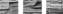

2013

Захожу я под
дождиком в сад,
где белёные яблони мокнут,
где плоды золотые висят
и на грунте шаги мои молкнут.
Небо сине,
белы облака,
в крупных каплях зелёные листья,
будто чья-то большая рука
тут писала трёхцветною кистью.
Эти капли
прозрачны насквозь.
Дождь, а на́
небе солнце подарком.
Видно, всё
так сегодня сошлось,
чтобы день был особенно ярким,
чтобы так и запомнилось мне:
дождь, и солнце, и запах шафрана…
Просыпаюсь в
ночной тишине.
Сновидение
словно с экрана –
где-то видел, а где – не пойму,
этот сад в освещенье закатном.
И прошедшая
жизнь, как в дыму,
чуть видна – или вовсе за кадром.
Январь 2013
БАЛЛАДА О
СКРИПАЧЕ НА КРЫШЕ
– Скрипач,
на крышу! – Не хочу!
Ну что там делать скрипачу
на скате скользком и опасном?
Давайте я
сыграю тут,
и вас на крыльях вознесут
мечты о добром и прекрасном.
– А ты
забыл, как голодал?
Забыл, как
нам надоедал
игрой в подземном переходе?
Тебе
придуман был сюжет;
теперь ты сыт, обут, одет –
вот и подумай о народе.
– Когда
играл я под землёй,
оберегал, хоть был смурной,
я мастерство превыше клада.
А там, на
крыше, я зажат,
и руки у меня дрожат,
и не могу стоять, как надо.
– У дома
собралась толпа;
она глуха, она слепа,
но денежки кладёт исправно.
Давай, на
крышу поднимись,
но не смотри всё время вниз,
и будет всё легко и славно.
Скрипач по
лестнице бредёт.
Он знает,
что произойдёт,
где кончится подъём высокий:
со скрипкой и смычком в руках
стоит на крыше, и не страх,
а стыд окрашивает щёки.
Но это снизу
не видать –
зеваки ждут, что благодать
на них сейчас прольётся сверху.
Шагнуть бы
вниз – и все дела!
Но как бы
бездна ни звала,
он снова выдержит проверку.
Зеваки там,
толпа, народ…
Никто из них
и не поймёт,
как он Бетховена калечит.
Но это –
несколько минут,
и с каждым разом легче тут:
как говорится, время лечит.
Январь 2013
Нашёлся
старый черновик,
оставленный на полуслове.
Напомнил он
в своей основе,
когда и почему возник.
Но почему
заброшен был?
Как видно, просто не писалось:
бывает, что иная малость
смиряет замысел и пыл.
И
закружилась голова,
и стало жалко эти строки,
и показалось мне, что сроки
не умертвили те слова,
и если заново разжечь
в душе давнишнее волненье,
получится стихотворенье,
где зазвучит живая речь.
И вот пошла
игра в слова,
соединенье их во фразу,
и что-то получалось сразу,
а что-то клеилось едва.
Текли часы,
сливаясь в дни,
и вот желанное рожденье!..
Но те, что
ждали продолженья,
слова и строки – где они?
На том же на
черновике,
теперь зачёркнутые густо,
они остались – и от чувства,
и от раздумья вдалеке.
Не наобум,
не впопыхах
на них я нынче поднял руку:
они сегодняшнему звуку
не соответствуют никак.
Стихотворение поёт,
то веселясь, то брови хмуря;
оно в несложной партитуре,
но усомниться не даёт,
что живо с вычеркнутым врозь
и что без этих строк легко мне –
но несомненно я запомню,
что с них-то всё и началось.
Январь 2013
В.
Настоящее
видя, вспоминая истоки,
мы подводим сегодня основные итоги.
Достигались
ли цели? Решены ли задачи?
Попадания
редки и нечасты удачи.
Были взлёты,
утраты и дороги Исхода.
Мы пришли к пониманью, что такое свобода:
мы достигли
свободы не бояться сомнений,
мы достигли
свободы не зависеть от мнений.
Поднимаемся
в гору. Горизонты яснее.
Ищем тропку
надёжней. Ищем истину с нею.
Мы достигли
свободы помнить факты и даты,
но не верить кумирам, сотворённым когда-то.
Круг общенья
всё уже, круг раздумий всё шире –
как прожить в несвободном, неприветливом мире?
Не
вписавшись в реальность, не придётся ли годы
жить под
гнётом ненужной обретённой свободы?
Январь 2013
СИЗИФ
Это враки,
что Зевс наказал меня вечной работой.
Да, и камень
тяжёл, и подъём, разумеется, крут.
Просто люди
нигде не умеют работать с охотой.
Я тащу этот
камень затем, что мне нравится труд.
Я тащу этот
камень, обдумывая по дороге,
как его ухватить, чтоб не вырвался снова из рук,
как запомнить ступеньки, где будут устойчивы ноги,
а совсем не мотив, как избегнуть навязанных мук.
Я тащу этот
камень. Мне помощи не предлагают.
На рассвете
начав, до заката управлюсь я с ним.
И тогда я
спускаюсь, и люди внизу полагают,
что опять этот камень, – а я-то пришёл за другим!
А потом
наверху из камней возведётся ограда,
а потом и фундамент, а после построится дом.
В этом ритме
неспешном удача моя, и отрада,
и покой оттого, что достигнуто это трудом.
И построится
город, и в нём позабудут Сизифа;
все дома вкривь и вкось – подневольных трудов торжество.
Лишь
останется имя в названии древнего мифа
да кривая ухмылка, когда произносят его…
Февраль 2013
ДЕТСКИЙ ДОМ
В БОЯРКЕ
Скорый,
товарный, а то электричка –
каждые десять-пятнадцать минут.
Рельсов,
колёс и гудков перекличка
не умолкает под окнами тут.
Рельсы
проходят почти у забора –
круглые сутки не жди тишины.
Хвойным
настоем соснового бора
комнаты детского дома полны.
Запахи,
звуки, видения эти
помню, как будто всё было вчера.
И ввечеру, и
на раннем рассвете
лепту приносит свою детвора.
Там и
сегодня всё та же погода
и занавески всё те же висят…
Словно
вчера? Ну, не более года –
но ведь промчались почти шестьдесят!
Что ж я
храню это всё, как богатство?
Нешто иного собрать не пришлось?
Было особое детское братство,
не допускавшее подлость и злость.
Может быть,
дело в душе и таланте
здешних наставников, строивших дом?
В жизни, во
взрослом её варианте,
дети таких не встречали потом.
Что не в
системе, мы думаем: случай –
но ведь случаен и каждый из нас:
сколько себя рассужденьем ни мучай,
всё происходит единственный раз.
И под
раскаты февральского грома
мысленно я возвращаюсь туда,
где за штакетником детского дома
ночью и днём всё бегут поезда…
Февраль 2013
НЕМОЕ КИНО
Электричкой
до станции Сетунь
и потом ещё долго пешком –
час, не меньше. Шагай и не сетуй,
что тебе этот путь незнаком.
Он знаком, и
простая проверка
подтвердит, что знаком, и давно.
Возвратись-ка назад на полвека,
посмотри-ка немое кино,
как повесткой из военкомата
был в учения ты погружён,
как шагал от платформы когда-то,
как искал номерной полигон.
Как ты всё-таки сбился с дороги
и в лесную ушёл глухомань,
как росло ощущенье тревоги –
а не скажешь себе: перестань! –
и как ужас взъерошил загривок
и морозом пошёл по спине:
ощутил ты в сознанья прорывах,
что стоишь в неживой тишине –
что не слышно ни птичьего пенья,
ни шуршанья ветвей и листвы,
что владыкою здесь – отупенье
в уголке незнакомой Москвы.
Отупение ты
пересилил
и ушёл, но висел на ногах
по Москве и по всей по России
распростертый мистический страх.
Ноги были и
впрямь, как из ваты,
но несли, и тебе повезло.
По случайности там побывал ты,
где скопилось вселенское зло.
А потом
отошло наважденье,
и тогда ты опомнился вдруг
и услышал по ходу движенья
электрички свисток-перестук.
По шоссе
самосвалы спешили,
пели птицы,
шумела листва,
и немое кино
завершили
заключительных титров слова.
И скрывали
ту зону от взгляда,
чтоб таилась и дальше она,
трёхметрового роста ограда
и молчанья глухая стена.
Февраль 2013
В.
Нет, нет, не
пролёты вокзала,
а просто простор голубой,
где ты так внезапно сказала:
– Сегодня я еду с тобой.
– Но как же?
Ведь эта дорога
уходит
незнамо куда.
На ней
неизвестного много
и даже возможна беда.
Она поездами
своими
в моей прописалась судьбе,
но помнил я, странствуя ими,
что должен вернуться к тебе.
Поэтому…
– Ладно, не сетуй;
смотри, приближается он,
тобой многократно воспетый
пустой и зелёный вагон.
Он станет
пустым и зелёным
теперь для тебя и меня,
он станет нам общим вагоном
теперь до последнего дня.
Глаза твои
нежно лучатся:
– Такой уже возраст у нас,
когда нам нельзя разлучаться
ни на день, ни даже на час.
А весь
антураж заоконный
тебе не доставит забот –
он в памяти нашей бессонной
и ныне, и присно живёт.
Смотри-ка,
мы едем нескоро
по самым нежданным местам.
Там нет на
пути семафоров
и нет расписания там.
Стоянки по
собственной воле,
и вектор движенья по ней,
и столько там счастья и боли,
что быть невозможно родней!..
…Я всё это
слышу и вижу –
вагон и летящий простор,
и тем я тебя не обижу,
что выдумал наш разговор.
Ты всё это
мне подарила,
и всё не во сне – наяву.
Во мне ты
всё это открыла,
и я в этом ритме живу.
Беру твои
плечи в ладони,
пространства плывут и года…
В пустом и
зелёном вагоне
мы едем незнамо куда.
Февраль 2013
Окрестности, пригород
– как этот город зовётся?
Юрий
Левитанский
Этот город
зовётся… а впрочем, названье не важно;
важно то, что в него я опять погружаюсь отважно,
и хожу по нему вопреки километро-годам,
и его узнаю по приметам, оставшимся там.
Там канал
впереди, а вокзал с электричками – сзади,
там старинный собор – из майолики знак на фасаде,
там на речке запруда почти что размыта водой,
там убоги дома и дворы поросли лебедой.
Я там прожил
когда-то дождливое скучное лето;
для чего – и тогда, и сегодня не знаю ответа.
Просто было
мне плохо, и я убежал из Москвы
в мир людей незнакомых, воды и пожухлой травы.
Я там что-то
писал без любви, без конца и начала,
и моё окруженье беззвучно меня поглощало.
Я сперва
улыбался, что, дескать, того и хочу,
а потом спохватился, что выбраться – не по плечу.
Но случилась
гроза, запоздалая, в августе ночью,
и при вспышках разрядов тогда я увидел воочью,
где свой век протяну я и где я когда-то помру, –
и в неделю уехал – в пустыню, в сухую жару.
Этот город
зовётся… а впрочем, ушло наважденье,
мне Господь даровал и души, и любви возрожденье.
Я название
помню, но, мысленно ставя свечу,
что хотел там прижиться, о том суеверно молчу.
Февраль 2013
Полузабытый
шорох осеннего листопада,
синий дымок над пеплом угасающего костра…
Буйство
страстей прошло – пришло дыхание лада:
тихая, незамутнённая, раздумчивая пора.
Это осень
пришла, но не как время года –
это период жизни, и после только зима.
Просто с его
началом совпало время Исхода,
и эта дорога была крута, но зато пряма.
Вся листва
облетела. Деревья стоят нагие
где-то там далеко, в покинутой нами стране.
Есть
протяжённая память. Нет никакой ностальгии,
разве что сожаленье о там прожи́той весне.
Был
прозрачно-зелёный период жизни весенний,
на бело-розовый цвет летели пчёлы, гудя…
Столько
высоких порывов – и столько же унижений,
сменивших весну на осень в мелких слезах дождя.
Полузабытый
шорох осеннего листопада,
синий дымок над пеплом угасающего костра…
В жёлтой
листве берёзка светится, как лампада
или свеча поминальная по канувшему вчера.
Февраль 2013
КНИГА
Я пишу эту
книгу по крайности лет шестьдесят.
Поначалу не
знал ни сюжета её, ни героев,
а оно ведь понятно – какой-то сюжет не построив,
мне придётся не раз и не два возвращаться назад:
добавлять, заселять, накоплять, отчислять, оживлять,
и опять исправлять, и опять расставлять по-иному,
по живому кроить и накладывать швы по больному,
приближаться к финалу и нехотя двигаться вспять.
Начинаю
придумывать этот ли, тот поворот,
а реальность возьми да и всё поверни несуразно.
Я – туда,
где потише, она – всё туда, где опасно,
где и автор бессилен, и вряд ли сам чёрт разберёт.
А судьба
персонажей? Любовно придумаю их,
а они, чуть явившись, тебе же садятся на шею.
Я страдаю от
этого, можно сказать, что болею,
и потом из десятка оставлю едва ли двоих.
Я пишу
ежедневно хотя бы по несколько строк
и дошёл до того, что написанный текст не меняю:
я пишу эту книгу и нынче себя подгоняю –
уложиться хочу в отведённый издательством срок.
Разбухает
она, потихоньку идя до конца.
Допишу
черновик, а уж набело – времени дело.
Время делает
это рутинно, бесстрастно, умело,
оставляя портрет, где приметы исчезли с лица…
Февраль 2013
В.
Берег под
галькой, под белым песком,
под ламинарий засушенным крошевом…
Я поселился
на мысе морском
в маленьком доме, давно позаброшенном.
Небо
прозрачно, прозрачна вода –
самое место
душевному голоду! –
а невозможно
осесть навсегда,
не обращаясь к соседнему городу.
Он
возвышается там, за спиной,
и отзывается в памяти тягостно,
но не прокормишься рыбой одной,
как бы тут ни было тихо и благостно.
Хочется
многого, часто без мер,
чем же хотенье моё ограничится?
Здесь тишина
установит барьер
тот, за которым лишь совесть – владычица.
Мыс,
окружённый барьером таким,
выглядит островом необитаемым,
и оглашается небо над ним
дважды в году журавлиными стаями…
Март 2013
ОРКЕСТР
В белых
сорочках с пластронами,
в чёрных смешных пиджаках;
скрипки и флейты с тромбонами
в сильных и умных руках;
взгляды их странно раздвоены:
в ноты и в палочки лёт, –
музыки мирные воины,
своеобразный народ.
Все
музыканты отличные,
каждому много дано;
вместе – забывшие личное,
вместе – дыханье одно.
Лишь
дирижёра решение
выполнить точно изволь! –
в этом святом отрешении
вместе и мудрость и боль.
Юности
пылкой пророчества
медленно сходят во тьму:
делай не что тебе хочется –
делай что надо ему.
Бездна ли
станет бездоннее,
явится ль ангел, трубя, –
в поисках высшей гармонии
не обойтись без тебя.
Март 2013
Это
почудилось мне? –
так уж бывало:
громко в ночной тишине
капля упала.
То ли на
кухне опять
кран подтекает,
то ли мешает мне спать
дурость какая,
то ли дневные дела
вспомнились вяло…
Снова минута
прошла,
капля упала.
Мыслей в
полуночной мгле
переплетенье,
а на оконном стекле
странные тени.
Что-то я
нить потерял,
начал сначала;
только обрывки собрал –
капля упала.
Сон,
обещавший придти,
движется еле.
Время
застыло почти
в этой капели.
Но
поредевшая мгла
спрятала жало.
Ночь
наконец-то прошла,
капля упала.
День
закружит, завлечёт,
улицей грянет.
Шумно вода
потечёт
в кухонном кране.
Но в
наступившей ночи
вроде обвала –
снова, хоть криком кричи,
капля упала!..
Март 2013
В.
С какого-то
дня нам не кажется странным,
что все путешествия мы отрубили,
что нам никогда уж не ездить по странам
ни в поезде скором, ни в автомобиле.
И только для
лёгкой печали основа –
что нас не качнёт никакая плацкарта,
и нам никогда не получится снова
попасть в середину размокшего марта.
Ведь дома
зима совершенно другая –
январские ливни, февральские грозы,
а в марте… Лишь птичек на крышах пугая,
прольётся немного – не дождик, а слёзы.
А дальше
совсем уж сухая погода,
когда ни единой дождинки не будет,
и только не раньше, чем через полгода
стремительный ливень нас ночью разбудит.
И всё-таки
что-то случается в мире –
мне выпала снова счастливая карта,
и я, оставаясь в обычной квартире,
вхожу в середину размокшего марта:
сидят рыбаки
у воды неподвижной,
загадочный поезд идёт стороною,
лицо у лица, и отчётливо вижу,
как прежде, сияние глаз неземное.
Его не
меняют бегущие годы,
его не меняют заботы и хвори,
и с нами доныне и вешние воды,
и дальние страны, и ближнее море.
Март 2013
ПУТЬ
СОВЕРШЕНСТВА
Триптих
Памяти Алексея Германа
1.
Путь
совершенства – многотрудный путь,
смешенье возвышенья и круженья,
но если уловил закон движенья,
уже не тормознуть и не свернуть.
Поставишь
планку на прыжок с шестом,
а прыгаешь без всякого снаряда,
и вопреки рассудку то, что надо,
на месте появляется пустом.
Когда её не
сбил, а покорил,
родятся мифы о наличье крыл,
которые и принесли удачу,
с которыми крутой маршрут не крут, –
а тут лишь дарование и труд
с немыслимым терпением в придачу.
2.
Путь
совершенства – одинокий путь.
Когда поэт
стремится к совершенству,
то ощущенье, близкое к блаженству,
не даст ему ни охнуть, ни вздохнуть.
Но он один.
А целый коллектив
принудить к совершенству невозможно,
а можно
только очень осторожно
внедрять вполне сомнительный мотив –
что
человека труд и мастерство
зависят лишь от совести его
и не всегда зависят от оплаты.
Есть твой
пример, урок или упрёк,
но ты и был, и будешь одинок,
а люди тем и рады, чем богаты.
3.
Путь
совершенства – двусторонний путь:
чем лучше, тем и дольше, и дороже.
Так стоит ли
стараться, вон из кожи,
чтоб обнажать обыденности суть?
Не хватит ли
и четверти труда?
А то,
глядишь,
так
пристрастишься к зелью,
что совершенство станет самоцелью
и заведёт неведомо куда.
Вот – целый
год снимался эпизод;
а зрители ушли за этот год
в каком-то несуразном направленье,
и вряд ли им захочется опять,
чтобы вернуться, преодолевать
завалы безразличия и лени.
Март 2013
КОЛОДЕЦ
Я взгляд
обращаю опять к небесам
не в тайной мольбе, не кому-то в угоду.
Даёт мне
холодную чистую воду
колодец, который я выкопал сам.
Но точно,
что если б не воля небес,
то как бы я знал, где сработает заступ?
Я в юности
не был настолько глазастым,
чтоб видеть сквозь толщу подземный разрез.
Оно
появилось годам к сорока –
умение чуять глубинную влагу;
я эти места заносил на бумагу,
потом начинала работать рука.
Я долго
учился уменью копать,
сумел одолеть волдыри и мозоли,
проклятье усталости, выкрики боли,
освоил секрет инструмент покупать.
Но главный
секрет и сейчас не по мне:
где вновь обустроиться – не понимаю,
и если лицо к небесам поднимаю,
какого-то знака ищу в вышине.
Колодец –
ну, право, какой водоём?
Не пруд и не
озеро донце колодца.
Но влага
небесная там соберётся,
и влага земная в колодце моём.
Март 2013
В.
Проснулся, беспричинно беспокоясь,
потом припомнил в сонной тишине:
в который раз я опоздал на поезд
в стабильно повторяющемся сне.
Остановился
на краю перрона,
смотрю с тоской на опустевший путь.
Слепой
фонарь последнего вагона
уже не задержать и не вернуть.
В жару и в
стужу, в дождь и при погоде,
в ночное время и при свете дня
бегу, спешу – а поезда уходят,
а поезда уходят без меня.
Бреду с
вокзала. Путь назад недолог –
круг площади
да перейти шоссе.
А там такой заманчивый просёлок,
в цвету деревья и трава в росе.
Глухая
полночь, и луна, как блюдце,
и звёзды с неба падают в траву,
и, слава Богу, есть куда вернуться,
вернуться не во сне, а наяву.
Апрель 2013
Пылало небо
на рассвете,
все краски дня в себя вобрав.
А рыбаки
сушили сети,
заваривали чай из трав
и шли потом неторопливо
домой в молчании мужском,
костры на берегу залива
привычно загасив песком.
А мы,
мальчишки, собирались,
покинув санаторный лад,
в пустую лодку забирались,
курили местный самосад.
Мы со
здоровьем были в ссоре,
но в час, когда пылал рассвет,
в себя мы впитывали море
на много предстоящих лет.
В своих
убогих коммуналках
познавшие убогий быт,
ходившие в обносках жалких
(и во дворе был каждый бит),
бубнившие свои ответы
среди других учеников, –
мы часто вспоминали лето,
залив, костры и рыбаков.
Опять мы
забирались в лодку
среди рассветной тишины,
копировали их походку,
изгиб натруженной спины.
Опять улов
несли сегодня
вернувшиеся из пучин,
и в мире не было свободней
и молчаливее мужчин.
Апрель 2013
ОБЕЛИСК
Взрывчатка в
каменной норе,
и на бикфордовом шнуре
пятно горения всё ближе.
Его зажгла
моя рука,
но функцию подрывника
в самом себе я ненавижу.
Однако –
взрыв! И что за ним?
Рассеется
сегодня дым,
осколки выметутся завтра.
Узнал сейчас
бы кто-нибудь,
какой пойдёт отсюда путь
для глыбы чёрного базальта.
Но вижу я
сквозь толщу дней
то, что другим не видно в ней,
что в толще каменной таится:
какой там свет, какая мгла,
какие скрыты там тела,
какие там укрыты лица.
Такой прорыв
уже по мне!
Поднять всё
то, что в глубине,
откалывая слой за слоем;
работая без выходных,
как память о своих родных,
пытаться сохранить былое.
Стук долота,
сверленья визг –
и вот готов мой обелиск,
он выглядит предельно просто:
о безысходности крича,
взметнулась чёрная свеча,
как вечный образ Холокоста.
Под чёрным
пламенем свечи
остановись и помолчи –
живой душе необходимо.
Миг, словно
камень, загустел:
не
разглядеть ни лиц, ни тел,
а только цвет печного дыма.
Но есть и
лица, и тела,
и не сгоревшие дотла,
а чудо моего исканья.
Не
объяснить, как удалось –
свеча, прозрачная насквозь,
и эти люди в толще камня…
Апрель 2013
Ежедневный
восход, ежедневный закат,
ежедневное солнце в окне…
То шершавый
малинник, то стайка опят
под колодой в лесной глубине;
то бегущий с предгорья ручей ледяной,
направленье дающий к реке;
то пространство степное с полынью сплошной
и с неярким костром вдалеке;
то в песчаной пустыне седой солончак –
предсказанье тюльпанной весны, –
это всё возникает неведомо как
в мире тьмы и ночной тишины.
Ежедневный
закат, ежедневный восход,
ежедневная в кране вода…
Это всё
несомненно со мною живёт
и со мною уйдёт навсегда.
Апрель 2013
Настенный
прибор погодный – родом из Роттердама:
мы его там купили, случилась такая блажь.
Но, похоже,
фортуна – тоже блажная дама
и одобряет порою такой внезапный кураж.
Дерево и
металл, стрелки и остекленье –
сделано всё добротно, под старину притом.
Шкалы
температуры, влажности и давленья
и по сути полезны, и украшают дом.
Словно стена
каюты лайнера типа «Титаник» –
заранее всё продумано, привинчено по местам.
Посмотришь
на показанья – и немедленно тянет
справиться за окошком: не океан ли там?
Выглядываю в
окно – а там и взаправду волны
зелёные с белой пеной, и чайки кричат с тоской.
До самого
горизонта простор океанский вольный,
и брызги летят на щёки, и пахнет солью морской.
И вся
громада домов плывёт, а куда – неизвестно,
плывёт со скоростью десять, а то и двадцать узлов,
и я гляжу в океан, разлившийся повсеместно,
и жду от него промытых и солью пахнущих слов.
Апрель 2013
ОБЪЕКТИВ
Достоверность в подробностях – только полдела:
мало снять, чтоб трамваи как прежде звонили,
мало снять, чтоб массовка как прежде галдела,
мало снять, чтоб обои с разводами гнили.
Это будет не
фильм о минувшем, а снимок,
потому и не
сможет в сердцах поселиться,
если автор его чем-то необъяснимым
не положит свой отсвет на речи и лица.
И случится
тогда полумрак на вокзале,
крик «Останься!» и белые скулы героя –
и отныне уже не своими глазами,
а его объективом увидим былое.
Апрель 2013
Поезд
остановился в местности незнакомой –
ни станции, ни разъезда, ни близко к рельсам жилья, –
и я внезапно подумал: вот он, давно искомый
шанс к перемене жизни, – что же мешкаю я?
Быстро
собрал пожитки и спустился с откоса.
Стлался
туман молочный, скрывая сухой бурьян.
И только
слегка знобило от непростого вопроса:
резкий дорожный выбор – зачем он так поздно дан?
Если б не
остановка, жил бы привычным домом
и на этот
просёлок не вышел бы никогда.
А нельзя по-иному узнать в краю незнакомом,
каков для дыханья воздух, какая на вкус вода,
услышать
новые речи, увидеть новые лица,
ощутить позвоночником какой-то новый покой,
не привлекая внимания, освоиться и прижиться
и об ушедшем поезде не вспоминать с тоской.
Воспоминания
эти – нервов глупая трата:
не пережить по новой, разве что ошалеть…
К той
железной дороге более нет возврата,
а ежели нет возврата, тогда о чём же жалеть?
Апрель 2013
БАЛЛАДА О
ПРЕМЬЕРЕ ФИЛЬМА
Объявлено о
премьере новой кинокартины.
Появилась
возможность вырваться из рутины,
избавиться хоть на вечер, на три-четыре часа
от верченья постылого беличья колеса.
О фильме уже
говорили – что это особый случай,
что в нём созвездье актёров – и вправду лучших из лучших,
а режиссёр картины воистину знаменит:
трём его фильмам «с полки» был путь на экран открыт!
Но это –
новая лента, только что с пылу-жару;
в недавние времена ей ждать бы такую же кару,
поэтому автор будет её комментировать сам –
по принципу «снявши голову, не плачут по волосам».
Событие не
волнует разве что самых отпетых –
на дальних подступах к залу спрашивают о билетах.
А в зале не
то что яблоку – вишне негде упасть:
представлены журналисты, культурный бомонд и власть.
Но вот
пригашены лампы, стол на фоне экрана,
стакан с водой, микрофоны – всё это довольно странно…
Вышел автор
картины, сел неспешно за стол
и по-домашнему просто свой разговор повёл.
Сначала он
шаг за шагом шёл по ходу сюжета,
припоминая то, слегка уточняя это,
потом подключил как будто некое волшебство,
и голоса героев ожили у него.
Разворачивал
он пейзажи, дороги и панорамы,
дворы – и поля сражений, простые избы – и храмы,
подробно портреты героев, улыбки, носы, усы,
мужество воевавших, чудо женской красы…
Два с
половиной часа он был на фоне экрана,
нечасто себе позволяя хлебнуть воды из стакана,
и шли по экрану тени то грустно, а то смешно,
и все, кто собрался в зале, ВИДЕЛИ это кино!
А он
закончил и встал, стеснительно так сутулясь,
и встали все, как будто от наважденья очнулись,
и долго рукоплескали, от зрелища без ума,
и разошлись восвояси, озадаченные весьма…
Май 2013
БАЛЛАДА О
ФОТОГРАФЕ
Фотограф из
быткомбината Шрайбер Абрам Наумыч
был старик с пергаментной кожей и трясущимися руками.
Но когда он
снимал клиента, исчезала вся его немочь –
он сажал человека в кресло и ходить начинал кругами.
Он
развешивал отражатели, прицельно сдвигал софиты,
меняя формат и ракурс, сто раз припадал к аппарату,
и, наконец, находил то, что будет потом на фото,
и лишь тогда назначал срок исполненья и плату.
В витрине
быткомбината выставлялись его работы,
для городка заменяя картинную галерею,
и что-то вроде смеси снисхождения и почёта
жители испытывали к взъерошенному еврею.
А он, идя с
работы в дом, навсегда осенний,
к лампочке вполнакала, к законопаченным рамам,
вовсе не думал о том, что в портретах – его спасенье,
за полвека привыкнув не прикасаться к шрамам,
не прикасаться к памяти, где лагеря и гетто,
где яры и овраги, где душегубки и печи…
Прошелестели
полвека, и отдалилось всё это,
но стало предельно ясно, что время, увы, не лечит.
Так много
было потерь, так мало было отдушин!
Распахнутое
общенье – лишь с камерой на треноге.
То ли жизнь
беспощадна, то ли он простодушен,
но не спасали его даже мысли о Боге.
А утешенье
Господне он принял бы, как награду, –
ведь у него не осталось почти никаких иллюзий –
и не затем ли снова припадает он к аппарату,
чтобы себя убедить, что люди – всё-таки люди?
Май 2013
Как-то вдруг
приутихли звонки – дверной с телефонным.
Пуст мой почтовый ящик и никаких выступлений.
Сосредоточился дома, жизнь протекает фоном,
главная радость года – что не болят колени.
Мимо
книжного магазина иду почти равнодушно.
Не манит
новое пиво и в местной рекламе пицца.
Собственную
строчку припоминаю натужно:
«Раз уж все обогнали, стоит ли торопиться?»
Похоже,
кончилась гонка, длившаяся годами.
Казалось,
ещё усилье – и некий приз обеспечен.
И вот – ни
золотой, ни даже картонной медали,
а я, как в юные годы, опять наивно-беспечен.
К чему поспешность ищейки и суетливость зайца?
Эти качества
ныне лишь вызывают жалость.
Иду по своей
дороге. С кем на ней состязаться,
если она изначально лишь мне и предназначалась?
Май 2013
В.
– Давай поедем в город, где мы с тобой бывали…
– Хорошее
желанье, да сбудется едва ли:
до города сегодня, как значится в билете,
три тыщи километров и три десятилетья.
Там всё, как
было прежде, нисколько не меняясь,
там, не боясь прохожих, по парку ходит аист,
и свежей жёлтой краской окрашены заборы,
и продают на рынке поштучно помидоры.
Там и в жару
прохладно от тихого залива,
там жители к работам спешат неторопливо,
ухожены деревья, дома одноэтажны
и звуки местной речи негромки и протяжны.
Там пляжи и
аллеи с утра в густом тумане,
и в том густом тумане проходят марсиане:
при свете – вместо солнца – таинственного круга
там жители и гости проходят друг сквозь друга.
Он был для
нас приютом во дни и ночи эти,
когда нас было двое на целом белом свете.
Вошёл он в
наши души реальностью и снами, –
зачем же ехать в город, когда и так он с нами?
Май 2013
…Всё перепуталось, и
сладко повторять:
Россия, Лета, Лорелея.
Осип
Мандельштам
Всё
перепуталось – беспомощность и сила,
любовь и ненависть, Израиль и Россия,
часы вчерашние и юные года, –
и только помнится: так было не всегда.
Всё
перепуталось, и сладко повторенье
давнишней музыки, давнишнего горенья
пусть даже так – среди сегодняшних потерь,
давно начавшихся, случившихся теперь.
Всё
перепуталось волокнами кудели:
дни на исходе, а мечты не оскудели,
и эту мудрость, что пришла на склоне лет,
хочу оставить как совет или завет.
Но жизнь
проносится сверхскоростным составом,
ей не прислушаться к усталым и отсталым.
Всё
перепуталось – что мудрость, что печаль?
Так что останется? Попробуй, отвечай!..
Май 2013
Хрупкий лёд
на реке и по берегу снег ноздреватый:
это солнечный март после долгой жестокой зимы.
Словно
клочья подмокшей и пылью присыпанной ваты
на тропинках кривых – или, может быть, мы непрямы?
То дыханье
неровно, а то голова закружилась;
влево, вправо ли шаг – и опора скользит под стопой…
Это
солнечный март, это Божья дарована милость,
лишь в суставах зима вспоминается болью тупой.
Время таянья
льда, время таянья позднего снега –
для чего ты опять появилось в тревожащем сне?
Есть побег
от зимы. От себя не бывает побега.
Левантийское
утро. И жаркое солнце в окне.
Май 2013
Незаметно и
тихо уходят из памяти
календарные даты, людей имена,
вызывая порою подобие паники,
словно смотришь с обрыва, а бездна черна.
Память я
заполнял и числом, и умением –
книги, фильмы, музеи, чужие края, –
а теперь лишь и чувствую с недоумением:
прохудилась просторная память моя.
Наблюдать
продолженье, конечно, не хочется,
да ведь там и не наша, а Богова власть,
и узнать не дано, как вселенная кончится –
та, которая мною когда-то звалась.
Май 2013
Тихий дождик
всё сыплет и сыплет в окне.
Пятый день
продолжается эта погода.
Под шуршание
дождика тихое что-то,
без названья пока, происходит во мне.
Релаксация
тела, а с ним и души?
Нелегко
заглянуть в наболевшую душу…
Тихий дождик
мне шепчет: послушай, послушай,
не спеши, не спеши, не спеши, не спеши.
Пятый день
моросит – моросит, а не льёт,
продолжается тихое с неба паденье,
и приходит внезапное освобожденье
от печалей судьбы и гнетущих забот.
Эти дни так
миражны, зато хороши
и звучат по сегодня, пускай и поглуше, –
тихий дождик бормочет: послушай, послушай,
не спеши, не спеши, не спеши, не спеши…
Июнь 2013
Бегу
проходными дворами,
погоня сопит за спиной.
Им, злым, да
к тому ж под парами,
пора посчитаться со мной.
Я знаю – они
не устанут
бежать, догоняя меня.
Я знаю – они
не отстанут,
в тупик свою жертву гоня.
Бегу
проходными дворами,
споткнуться боюсь и упасть.
Склоняет
меня к мелодраме
погони угрюмая власть.
А сколько их
– право, не знаю,
и что там у них на уме,
и есть ли дорога сквозная
в местами желтеющей тьме.
Бегу
проходными дворами,
отчаяньем мозг перегрет.
…Во сне, как
на старом экране,
опять мой мальчишеский бред:
кино
чёрно-белое это,
где в страхе бегущий герой,
со вспышками жёлтого цвета
и красного цвета порой.
Бегу
проходными дворами,
погоня сопит за спиной –
вся
тысячелетняя память
спрессована в ленте одной…
Июнь 2013
ОСЕНЬ
В.
Вид из окна:
невысокие старые скалы,
россыпью камни и далее мокрый песок.
Глядя на
берег, привычно тропу отыскала
к пенной воде между скалами наискосок.
Кресло
поставила, следуя этому взгляду,
чтобы подольше смотреть в направленье одном.
Осень
пришла. Никуда торопиться не надо.
Тихо в
жилище, лишь море шумит за окном.
Было
довольно в судьбе и успехов, и горя,
вот и остались в лице и на теле следы.
Надобно было
сначала добраться до моря,
домик найти, на него накопить за труды.
Шутка
сказать – пролетевшее двадцатилетье!
С морем в
соседстве – и моря не видя почти…
Память весны
и обрывки картинок о лете –
редкие вехи застыли на этом пути.
Только
недавно возникло предчувствие лада,
пусть не во всём, а хотя бы пока в основном.
Осень
пришла. Никуда торопиться не надо.
Тихо в
жилище, лишь море шумит за окном.
Старая
утварь, по берегу старые скалы,
старые книги, и прятать не нужно лица.
Что-то
закончилось. Что-то начнётся сначала.
Тихая
нежность и море – они без конца.
Июнь 2013
Когда
человек остаётся на свете один
и всеми забыт – неизвестно, он жив или умер.
Нет горше
печали, и кто бы его надоумил,
что это у всех, дотянувших до поздних седин.
Ушли
постепенно родные, друзья и враги,
а прочие все – пусть и вежливы, пусть и приличны –
по сути своей и по праву к тебе безразличны,
чего-то иного от них ожидать не моги.
И тянется
время, остатки иллюзий губя,
ты к мимо идущим уже не относишься строго
и, ежели веришь, надеяться можешь на Бога,
а если не веришь, надежда одна – на себя.
Июнь 2013
ШУТ
Тебе
дозволялось к заморским послам
в их грамоты носом влезать.
Тебе
дозволялось придворным ослам
их длинные уши казать.
Тебе
дозволялось хватать короля
за мантию и за сапог,
стоящих у трона гуртом веселя
видением царственных ног.
Тебе дозволялось всю правду в глаза –
что пьян – говорить королю,
когда расшумится обеденный зал
и гости уже во хмелю.
Но в дальних
покоях сиди и молчи,
намёки монарха лови,
не то растолкуют тебе палачи
извивы монаршей любви.
Тебя защищал
твой дурацкий колпак,
бубенчики на колпаке,
и видел народ, что король не дурак,
что сила в его кулаке.
Когда же
прервутся владыки лета
и челядь поплачет о том,
кто вспомнит проказы былого шута,
клонясь перед новым шутом?
Июнь 2013
Предостаточно в жизни и боли, и грязи,
нас меняют
они, в наших душах осев.
Обрываются
горизонтальные связи –
с кем-то ссоришься, кто-то уходит совсем.
Год
сменяется годом, потери нечасты;
вдруг заметишь в ничем не помеченный день:
все, кто были к тебе хоть немного причастны,
как-то сразу ушли в непрозрачную тень.
Что искать
утешенья в беспомощной фразе,
над собой то ли плача, а то ли смеясь?
Обрываются
горизонтальные связи.
Остаётся
одна вертикальная связь.
Июнь 2013
Славный
письменный стол был задёшево куплен:
тот, кто сиживал раньше за этим столом,
паковал чемоданы с баулами вкупе –
навсегда
покидал опостылевший дом.
А в моей
биографии был он впервые –
так она по семейным жилищам прошла,
что на кухне столы, для застолья, иные, –
для бумаг и письма не бывало стола.
Он был очень
удобен, продуман как надо –
тумба, ящик и сбоку две полки для книг, –
и такая вокруг источалась отрада,
что буквально за сутки к нему я привык.
Что с того,
что столешница вытерта малость?
Мелочёвкой
удачу свою не гневи!
Никогда мне
раскованно так не писалось,
как за этим столом в атмосфере любви.
Дни
сменялись в заботах, нам отроду данных;
из всего выделяю я веху одну:
наступило и нам размещать в чемоданах
то, что надобно взять, покидая страну.
Мы оставили
дом без больших сожалений,
атмосферу любви сохраняя в себе,
и на новой земле без печали и лени
обживали своё восхожденье в судьбе.
Новый
письменный стол появился нескоро –
через восемь нелёгких наполненных лет,
и опять подошёл к атмосфере, в которой
был свободы незримый, но явственный след.
Я сижу за
столом. Белый лист предо мною.
Лёгкий гул в
голове, словно дальний обвал.
И наверно в
стихах я чего-то да стою,
раз любовь и свободу мне Бог даровал.
Июнь 2013
ЧЕРНО-БЕЛОЕ
КИНО
На какое-то
время и цвет исчезает с экрана,
и дубляж
двухголосый доносит слова монотонно –
чёрно-белая лента о буднях преступного клана,
промышлявшего спиртом в эпоху сухого закона.
Перестрелки
и драки. Подпольные бары. Погони.
И любовные
сцены – в такой кутерьме эпизоды.
На кону
миллионы. И держится всё на резоне,
что живём однова, запастись невозможно на годы.
В нашей юной
весне этот фильм вызывал потрясенье,
и мелодия в свинге прекрасной была и манящей…
Но и лето
прошло, и кончается возраст осенний,
и милее сюжеты из жизни простой, немудрящей.
С упоеньем
смотрю чёрно-белую ленту о доме,
где живёт-поживает старик лютеранский священник,
о нелёгкой его, но завидной по-своему доле –
можно честно служить и не очень зависеть от денег.
Совершенно
седой, он с утра просыпается рано,
размышляя о жизни – она и мелка, и бездонна –
под гудение сосен, потом под раскаты органа
и под песенку детства, звучащую в нём камертонно.
А когда он
ложится и гасит ночник у постели,
то не сразу заснёт под своим одеялом на вате:
докучают суставы в его потревоженном теле,
и становится знобко, как было давно, в Кайзервальде.
Только что
это я? Ведь об этом с экрана ни слова!
Я домыслил, а может быть, попросту выдумал это.
На экране
глаза. Облака проплывают. И снова
на экране глаза. Вот такое искусство портрета.
Июль 2013
Обзавёлся ты
на пороге
крепким посохом и сумой
и пошёл по своей дороге,
неширокой и непрямой.
Под стопой
то песок, то щебень,
то и вовсе хляби да мох,
а соблазны – и птичий щебет,
и река, и костра дымок.
Но иди при
любой погоде,
хоть по карте, хоть наугад,
и всего важнее в походе –
не оглядываться назад.
В доме,
может быть, и убого,
а не мучит ночная дрожь.
Но ведь это
– твоя дорога,
только ты её и пройдёшь.
Будет
всякое, и немало:
и разрушенные мосты,
и тяжёлых брёвен завалы,
и несбывшиеся мечты.
Ну, а горше
всего в итоге –
вроде б трасса пряма, светла,
но стена поперёк дороги
бронированного стекла.
Даже если
совсем устанешь
пробивать эту стену лбом,
не смотри назад, ибо станешь
пожилым соляным столбом.
Будь всегда
пред собою честен,
и зажми сомненья в кулак,
и стена с дороги исчезнет.
Божьей
волей. Не знаю, как.
Июль 2013
Здесь всё на
пятачке: и почта, и аптека,
пекарня, овощной, метизный магазин…
Как в
лозунге былом, здесь всё для человека –
услуги и еда, леченье и бензин.
Здесь можно
не спешить, когда идёшь с работы,
в одну, в другую дверь попутно заходя.
Ведь ежели
тебе понадобилось что-то,
найдёшь на пятачке – от сыра до гвоздя.
Здесь жители
домов, окрестных и не только,
простую жизнь ведут. Здесь иногда галдёж
и тесно иногда, но и довольно толку:
ступай на пятачок – вовек не пропадёшь!
Машины по
шоссе лавиною сплошною
несутся день и ночь, а здесь иной кураж,
и кажется порой, что время здесь иное,
и видится порой загадочный мираж:
копытный перестук не вызовет насмешки –
лошадка стукотит с тележкою в ладу;
ей весь маршрут знаком, и человек в тележке
поводья привязал и дремлет на ходу…
Июль 2013
Увы, пришли
такие времена:
в ночной тиши, медлительной и зыбкой,
уже рояль не ссорится со скрипкой
и лютня по соседству не слышна.
А слышен
только монотонный звон,
негромкий, даже немощный порою,
смолкающий порою, и не скрою,
не так уж сильно докучает он.
Но всё равно
противится душа
такой замене: признаки скупые
мне говорят, что это энтропия.
А музыка ведь тем и хороша,
что в ней порядок властвует над всем –
над инструментом и над нотным станом,
и в этом совершенстве неустанном
мы слышим неподвластное совсем
для разума, для пальцев и для глаз,
для шума новостных формулировок,
и даже те, кто искушён и ловок,
в познанье мира не догонят нас –
нас, у
которых музыка была
частицей бытия, пускай не часто,
но всё-таки сумела достучаться
туда, где метроном добра и зла…
Июль 2013
На планете
почти повсеместно вода –
можно плавать, и мыться, и стряпать, и пить;
а под сушей почти повсеместно руда,
нужно только уметь распознать и добыть;
и повсюду растений зелёный покров –
будут надобны листья, плоды, семена;
рыбы, птицы и звери – охота и лов:
и еда, и работа, и даже война;
и богатая почва в излучинах рек;
и в горах перевал и заснеженный пик –
всё готово к тому, чтоб возник человек;
ну, а если готово, вот он и возник,
постепенно деревья и травы назвал,
постепенно назвал рыб, и птиц, и зверей,
постепенно придумал и круг, и овал
и пошёл по земле всё быстрей и быстрей,
потому что весь мир, где и стол был, и кров,
для него одного кем-то был сочинён –
и о том, кто же этот Создатель миров,
постепенно и внятно додумался он.
Июль 2013
Жизнь стала
проще и понятней
под старой сморщенной корой.
Как сизари
над голубятней,
уходит вверх соблазнов рой.
Они
вернутся? Вряд ли это:
душою с ними не кружу
и только участью поэта
ещё пока что дорожу.
Так чем же
стала жизнь простая,
что я такого понял в ней?
Никто не
слышит, не читает,
не разделяет ярких дней,
и дней, где вперемешку пятна,
и дней у бездны на краю…
Вот это
стало и понятно –
все проживают жизнь свою.
А стая – вот
она, в зените,
едва видна на вираже…
Прощайте,
голуби, летите,
вам нет пристанища уже.
Июль 2013
…и, посмотрев назад,
просто скажу: пожарище…
Из стихотворения 1993
года
Климат резко
континентальный: летом сухо, жара под сорок;
зимой бураны и вьюги, минус тридцать не удивит.
Летом степь
бесконечна, в небе ястреб опасно зорок,
зимой куда ни посмотришь – ровный заснеженный вид.
Пейзажи
раннего детства – такими я их запомнил;
война, эвакуация, долгий вагонный быт.
Тот разговор
колёсный, тот пробег заоконный
во сне услышу-увижу – и горестно зазнобит.
Умеренный
климат равнинный: зимою легки морозы,
под солнцем снега сверканье, пушистые провода;
весной цветенье садов, короткие громкие грозы;
осенью тихий дождик, летом – полей страда.
Это юности
годы. Их изнутри взрывали
вожделенье и жадность до всего, что вокруг,
но незаметно и тихо где-то в душе вызревали
представленья о важности незапятнанных рук.
Климат
большого города – совсем особенный климат,
с нормами географии он часто живёт не в лад,
снежную белизну выбивая транспортным клином,
в летний горячий воздух внося промышленный чад.
Похожими
друг на друга были зрелые годы,
и многое происходило здравому смыслу назло,
бессмысленно нарушались даже законы природы,
и только ли в астме причина, что было дышать тяжело?
И вот
средиземноморский – климат мягкий как будто:
не бывает морозов, долгие ливни зимой;
лето жарко, но всё же не предельные атрибуты,
правда, жара и влажность – Господи Боже мой!
Может быть,
эти заботы отнесу скорее к ментальным:
двадцать лет над пожарищем всё ещё вьётся дымок…
Но и в
равнинно-умеренном, и в резко континентальном
так легко и свободно я дышать бы не мог.
Июль 2013
ПРАЗДНИК
Свет
пепелисто-сизо-голубой –
луною озаряется равнина.
Дым
коромыслом над курной избой,
вовсю гуляет здешняя рванина.
Что празднует? А всё
одно и то ж,
и не нужны им поводы достойней:
то в местном стаде
кончился падёж,
то дочь соседа разрешилась двойней.
Тогда нужна
большая сулея,
кило дрожжей и сахара четыре,
и в деле не казёнка, а
своя –
она дешевле, и гулянка шире.
И ни к чему
копать до сердцевин,
бери-ка сверху истину простую:
вот надобно топить – сожгли овин,
который всё равно стоял пустуя.
Гармошки
развесёлая игра,
и в мыслях никакой тебе наживы,
и завтра будет лучше, чем вчера,
одна забота – все ли будут живы?..
Июль 2013
Вот Гроссман
и Бродский, Денисов и Шнитке, Тарковский и Герман –
не знаю, ко всем ли из них применимо понятие «гений», –
но дело не в слове, и дело не в славе, а именно в деле,
которым они, не жалея себя, филигранно владели.
Но так уж
ведётся в стране, где они родились и трудились:
без самых высоких и самых прекрасных легко обходились.
Оно и
понятно – ведь тот, кто высок и при этом прекрасен,
сидящим на троне и рядом стоящим особо опасен.
Где сердце и
разум вошли в пониманье, почуяв свободу,
носителя дара ничем не принудить работать в угоду –
ни плёткой, ни платой, ни скрытой угрозой, что ты неугоден, –
творящий своё недоступен
диктату, пока он свободен.
Скорей
предпочтёт он уехать, умолкнуть и даже погибнуть,
но перед сидящим и рядом стоящими спину не выгнуть,
а тем остаётся придумывать если не казни, то козни
и в тёмные души внедрять семена отчужденья и розни.
Они
преуспели: взошёл тот посев урожаем богатым
угрюмых людей по дворам и цехам, по квартирам и хатам,
которые с
детства приучены были неправду не видеть,
а тех, кто пытается высказать правду, в упор ненавидеть!..
Июль 2013
…лилипут себе
приснился великаном…
Анисим Кронгауз
Конечно, сны
бывают очень разными,
но ведь и наяву в период ранний
себя в мечтах мы видим великанами,
скорей всего, без всяких оснований.
Когда бушуют
страсти гормональные
и кажется, что всё тебе доступно,
границы размываются реальные –
переступить их вовсе не преступно!
А жизнь
идёт, и лишь она виновница
рутины возвращения к истокам,
и человек таким, как все, становится,
ну разве что чуть более высоким –
и то, когда ему для возвышения
не служат пьедесталы и котурны.
А жизнь
идёт, и редки искушения,
а если и случаются, не бурны.
Конечно, сны
бывают очень разными:
вот старику, который сном опутан,
явился цирк, и фокусник с обманами,
и сам себя он видит лилипутом.
А жизнь идёт
и спящего приветствует,
даря ему волнения живые,
и сон, должно быть, яви соответствует,
поскольку снится явно не впервые…
Июль 2013
В.
Наш давний
дом пургой по окна занесён,
а на дворе июль – попробуй что исправь…
Такая форма
сна: зовётся «полусон»,
такая форма сна: зовётся «полуявь».
В
заснеженном дому мы молоды с тобой.
Тут
растопить бы печь, да нет в запасе дров.
В
заснеженном дому настигла нас любовь,
и согревает нас холодный этот кров.
В
заснеженном дому ты создала уют,
но не бывает жизнь без тягостных потерь…
А на дворе
июль – зачем же мёрзнуть тут?
И небо
говорит: – А если настежь дверь?
Выходим на
крыльцо. У дома – океан,
где можно вольно плыть любому кораблю.
И если этот
сон хоть ненадолго дан,
не говорит ли он, что я тебя люблю?
Июль 2013
УРОКИ ШКОЛЫ
Сельская
школа под Киевом в начале шестидесятых.
Как её
изнутри мне поточней описать бы?
Семилетка
вся размещалась в двух приземистых хатах,
волей судьбы уцелевших ещё из панской усадьбы.
А для
восьмого класса не хватило хат украинских –
построили домик из двух так называемых финских.
Я проработал
там три полновесных года,
преподавал математику, физику и черченье,
а когда одной из учительниц подоспело время ухода,
мне и уроки химии отдали на попеченье.
А был ведь
ещё вечерний – девятый, потом десятый,
я успевал и туда. А что? Молодой, неженатый…
Я построил
радиоузел, физкабинет, мастерскую –
естественно, не один, а вместе с учениками.
Не принимал
как тягость я работу такую,
поскольку всегда любил и умел мастерить руками.
Я работал
посильно, ребята мне помогали,
но в учительском коллективе так не все полагали.
В район
полетели письма: мол, молодой коллега
как-то уж слишком поддался высокому самомненью,
дешёвую популярность решил получить с разбега
вместо того, чтоб учиться учительскому уменью.
В районе,
разумеется, услышали глас народа
и слали ко мне проверки почти в течение года.
Но тут на
фоне доносов, проверок и разговоров
произошло событие, давшее встречный вызов:
изготовленный нами комплект учебных приборов
на областной выставке отмечен был первым призом.
И высокий
начальник прилюдно меня поздравил,
и страсть народа тем самым в другое русло направил.
…Полвека в
людской судьбе – это немалые сроки,
где каждый отрезок времени имеет свои приметы.
На очень
раннем этапе я получил уроки:
не верь, не проси, не бойся – такие были предметы.
И экзамен по
ним сдал на тройку, но честно:
наивным ещё остался, но вера в народ исчезла.
Август 2013
Не нужно
сетовать на быт,
на время, власть и лик удачи:
да, всё могло пойти иначе,
но в этом списке-полуплаче
ты сам собою не забыт?
Тебе была
стезя дана,
записанная на скрижали;
да, камнепады угрожали,
да, негодяи обижали,
но где же и твоя вина?
Ты получил
удар под дых
и сам от цели отступился,
и сам нелепо оступился,
и сам бессмысленно напился –
чего же ждать от остальных?
И вот
очередная дверь
не распахнулась по желанью,
и отодвинулось признанье,
и стало призрачным призванье –
на что надеяться теперь?..
Август 2013
Подробная и
пристальная память
мне по ночам покоя не даёт,
и не могу в запас её отправить,
и не могу
послать её вперёд.
А просто
неподвижное виденье,
знакомое до мелких мелочей,
и длится этот сон, подобный бденью,
на протяженье нескольких ночей.
И снова
погружение, и снова
со дна наверх догадкой вознесён,
пока найду единственное слово,
которое вмещает этот сон.
И от него
сквозь пристальное зренье
из тех времён да в наши времена
тихонечко растёт стихотворенье,
как вырастает колос из зерна.
Август 2013
Свежий хлеб,
камамбер и коньяк
под звучанье негромкого джаза…
Дай нам,
Боже, посиживать так
раз в неделю в течение часа
лет хотя бы… Но страшно просить –
десять мало, а двадцать – в избытке:
может статься, что прочная нить
превратится в подобие пытки.
Боже правый,
Ты сам запиши
в Книге судеб, в положенном месте,
чтобы две этих тихих души
жили долго и умерли вместе.
Август 2013
БАЛЛАДА ОБ
ОДНОМ СТИХОТВОРЕНИИ
В.
Был
выходной, и был неспешный завтрак,
но что-то в
нём с утра происходило,
и все дела отложены на завтра,
а надобны
бумага и чернила.
Поскольку
речь ведётся о поэте,
то в доме
знали состоянья эти.
Жена в
гостиной с книгой прикорнула.
Он покурил
на лестничной площадке,
прислушиваясь к внутреннему гулу –
момент всегда томительный и краткий.
Вернулся в
дом. На кухне стол очистил
и сел писать о старом букинисте.
Сюжет
сначала оставался мглистым:
там был поэт в задуманной балладе,
который на продажу к букинисту
приносит рукописные тетради.
Пошла
беседа, сдержанно речиста,
и дальше торг в мансарде букиниста.
Перо почти
летело по тетради,
рождались поразительные строки.
И в темпе
сочинения, и в ладе
сквозил какой-то замысел высокий.
Похоже было,
диктовалось это
загадочным предвиденьем поэта.
Прошёл по
окнам, ослепив жилище,
февральский полдень, солнечный и белый.
Он строки
заключительные ищет,
одновременно робкий и умелый,
и, отыскав, сидит в изнеможенье:
победа это или пораженье?
Жена вошла,
когда почти стемнело:
– Весь день
в работе, ну скажи на милость!
И наступает
их святое дело:
он ей читает то, что сочинилось,
и прояснит их тихая беседа,
что́ это – пораженье иль победа.
– По чести и
по совести – удача,
но не дошёл немного до победы:
своё сомненье в оптимизме пряча,
в последних строчках изменил себе ты.
Поверив
слуху своему и зренью,
не бойся верить своему прозренью.
Твой
букинист умён и беспристрастен,
и видел многочисленные доли,
и знает он, что даже в Божьей власти
нет вечности, а для стихов – тем боле.
Зачем же он
поэту обещает
бессмертие – и тем его смущает?
– Хоть
горько, но согласен я с тобою,
что нет бессмертья даже и у Бога.
Но то, что
называется судьбою,
мне виделось, как долгая дорога.
Для
вечности, однако, это мало,
и я перепишу строфу финала.
…Переписать
строфу – неужто трудно?
Ушло на это
больше полугода:
то в окруженье было многолюдно,
то не по делу портилась погода…
Неделя за
неделей пролетала,
а всё какой-то правды не хватало.
Растаял
снег, отзеленело лето,
и тут пришло внезапное прозренье,
что букинист не сохранит поэта,
но сохранит одно стихотворенье,
в котором и живут созданья эти, –
балладу о торговце и поэте.
Что значит
сохранить? О результате
нам не дано узнать, да и не надо.
Но если
будет хоть один читатель,
уже не зря написана баллада.
А может быть
– и речь не о награде –
не зря ему же отданы тетради.
И снова
чтенье в тишине вечерней,
и в мягком свете потолок и стены,
и милый голос, камертонно верный:
– Ты победил, и это несомненно!
Один
читатель – мало или много?
Один
читатель, но зато от Бога!
Август 2013
ДОМ НА ДВОИХ
Триптих
1.
Жизнь вошла
в колею, слава Богу,
и погас кочевой ореол.
Накопил я
деньжат понемногу
и участок земли приобрёл.
Был я
смолоду попросту нищим,
как и все, кто вокруг обитал,
но нельзя было строить жилища
даже и за презренный металл.
Где же было
добыть мне уменье
свой надел обустроить и жить,
возведя тут никак не именье –
просто дом, где призванью служить?
Я не стал
дожидаться совета
знатоков, да и не было их.
Кухню, спальню и два кабинета
и гостиную – дом на двоих –
порешил на
участке построить,
и совсем ни к чему пересверк:
даже если бы площадь утроить,
ничего не придумал бы сверх.
Два
компьютера, книги и диски,
стол и стулья, плита и кровать,
и проблема в единственном риске –
на удачу нельзя уповать.
Уповаю на
труд ежедневный,
на здоровье, на солнце в окне…
А удача
пусть будет не гневной,
пусть покладистой будет ко мне.
2.
Если хочу
построить уединённый дом
и не зависеть от вентилей городского водопровода,
нужно вырыть колодец и убедиться в том,
что в нём довольно воды во всякое время года.
Если хочу
построить уединённый дом
и не зависеть от линий электричества или газа,
нужно поставить ветряк и убедиться в том,
что во всякое время года от ветра не будет отказа.
Если же мало
ветра, но много солнечных дней,
энергию получить по-иному поможет природа:
можно поставить секцию солнечных батарей, –
правда, не будет места для сада и огорода.
И, значит,
нужна дорога – не асфальт, не бетон, –
пускай всего лишь просёлок от регулярной трассы,
чтоб заказать подвозку и убедиться в том,
что будут своевременно в дом доставляться припасы.
Но если
нельзя прожить только своим трудом,
если, так ли, иначе, с миром контакт сохранится,
зачем же нужен тогда уединённый дом,
в чём защита от мира и где проходит граница?
В нём я могу
быть собой почти без всяких помех,
ибо это жилище – не просто стены и своды:
в нём я такой, как все, – и отличаюсь от всех;
уединённый дом – пространство моей свободы.
Но всё это в
одночасье сделать нельзя никак,
и десять лет унесла строительная истома.
Есть
колодец, дорога, секция и ветряк,
и столько же лет ушло на возведенье дома.
Вечерняя
тишина. Фонарь горит у дверей.
В ожиданье
прохлады сижу под седой оливой.
А за моей
спиной – опора жизни моей,
уединённый дом, прочный и некичливый.
3.
Мы задумали
выстроить дом на двоих.
Это значит,
мы были достаточно зрелы,
в меру опытны были и в меру умелы,
чтоб проекты читать и оценивать их.
Ну, понятно,
цена. Ну, понятно, метраж.
Ну, понятно,
на местности расположенье.
А ещё и
соседских домов окруженье.
А ещё
окружающий дальний пейзаж.
А в процессе
постройки проверить не грех,
наблюдая внимательно и постепенно,
чтобы прочные двери и ровные стены,
да ещё чтобы крыша была без прорех.
И, конечно,
не нужно о том забывать,
чтобы тяга в печи не стонала, а пела,
чтоб нигде половица в ходу не скрипела,
и о том, чтоб не очень скрипела кровать, –
ибо стол, и
лежанку, и полки для книг,
и шкафы для хранения в кухне и ванной
те же плотники ладили, что деревянный
возводили неспешно наш дом на двоих.
Эти крепкие
парни работали так,
что совсем ни в каком не нуждались контроле,
но уж больно вошли мы в исходные роли,
проверяя за ними подвал и чердак.
Символичен
контроль и не нужен уже,
но, хотя мастера не прибегли к халтуре,
отличается то, что возникло в натуре,
от того, что предписано на чертеже.
Мы построили
дом и сживаемся с ним.
Над собою
насилия не учинили.
Оплатили
счета. Кое-что починили.
Никому не
должны. Никого не виним.
Август 2013
КАМЕНЬ
Лежит
морщинистый камень около входа в дом.
Он,
полувросший в почву, напоминает о том,
как закладывали фундамент и подняли из глубины
его, чьи очертанья в траве почти не видны.
А дом
морщинистый тоже, ибо давно не нов:
прошли по его квартирам три поколенья жильцов.
И некому
нынче припомнить его молодой наряд;
мог бы поведать камень, но камни не говорят.
Не говорят,
но память всё-таки есть у них,
и я нередко жалею, что в неё не проник,
и в камне подозреваю пласты, в которых века,
и разгадать пытаюсь тайны его языка.
И словно бы
ниоткуда слова приходят ко мне –
а может, они
лежали в каменной глубине,
лежали и просто ждали в темных пластах своих,
что человек однажды захочет услышать их.
И вот во мне
оживают спрессованные века
в звуках камня и дерева, в звуках воды и песка.
В песке
проносится конница. В камне горят костры.
Лишь из
родимой почвы возможны эти дары.
Август 2013
Позволительны эти поблажки:
беспричинно улыбкой лучась,
отхлебнуть из припрятанной фляжки
и проспать обязательный час,
или деньги, добытые тяжко,
в одночасье спустить на мираж, –
потому и зовётся поблажкой
беспричинная глупая блажь.
Если касса с
карьерой задеты,
но в орбиту не втянут никто,
ты один отвечаешь за это;
ублажайся, пока решето
подходящим не станет сосудом,
чтоб водицы тебе принести,
и себя обнаружишь разутым
на покрытом щебёнкой пути.
Дай-то Бог
спохватиться не поздно,
и увидеть планиду свою,
и с улыбкой, пусть даже и постной,
возвратиться
опять в колею,
где ступаешь ни валко ни шатко,
но удел принимаешь всерьёз:
ты, увы, не пегас, ты лошадка –
та, везущая
хворосту воз…
Сентябрь
2013
Время ушло –
несомненно суров,
но справедлив приговор:
нет в обиходе сегодняшнем слов,
чтобы вести разговор
о шелестящем рассветном дожде,
об ускользающем сне
и о речной небурливой воде
в тёмной её глубине.
Время ушло,
где, не очень спеша,
жить-поживать мы могли,
где постепенно впитала душа
звуки и краски земли,
где неторопкое чувство двоих
зрело, как белый налив,
и поспевало ко времени, их
впрок на года одарив.
Время ушло –
что же от году год
никнет моя голова?
Ведь не удастся вернуть в обиход
тихие эти слова,
освободить от железных оков
дошлым и ушлым назло…
Время ушло
для подобных стихов –
или ещё не пришло.
Сентябрь
2013
ВЕСЫ
Старинной
формы весы висят в аптечной витрине:
бронзовый стержень простой с дыркой посередине,
в дырке – ось, по краям – чаши на тонких нитях;
высокая правда в них, что понуждает хранить их.
Предельно
наглядны в них все представленья наши:
лекарства ингредиент на правой насыпан чаше,
на левой – гирька одна; если вторая рядом,
может случиться так, что станет снадобье ядом.
Шаг за
шагом, и вот, как повелит натура,
готово лекарство – мазь, облатки или микстура.
Украсит
яркий рецепт посуду на правой чаше,
на левой – горстка монет: символ купли-продажи.
Качнувшись
туда-сюда, несуетно, без натуги
уравновесят весы здоровье и наши недуги,
богатство и нищету, покой и горячку в жилах –
они даже жизнь и смерть уравновесить в силах!
Есть
ежедневный риск с рожденья и до кончины,
что всё оборвётся вмиг – война, болезнь или шины, –
но издавна знают о том и города, и веси,
что в жизнь приносят весы хрупкое равновесье…
Сентябрь
2013
ВОСПОМИНАНИЕ
О БУДУЩЕМ
Стоит на
одной ноге голенастый подъёмный кран,
вытянув длинную руку, в которой на тросе крюк.
Это начало
фильма – силуэтом во весь экран
символ огромной стройки, где трудятся тысячи рук.
Строится
новый город, сразу на миллион:
тысяча небоскрёбов по пятьдесят этажей,
на каждом четыре квартиры – по одной с четырёх сторон,
и каждая планировалась на пять проживающих в ней.
Все дома
одинаковы, одинаковы все этажи,
квартиры различны лишь вектором – юг, север, запад, восток.
Правительством установлены для города рубежи,
правительством установлен для стройки конечный срок.
А по
соседству строится сверхуникальный завод,
и всё население города он привлечёт к труду:
наращивая продукцию по плану из года в год,
он будет производить синтетическую еду.
Станет еды
предостаточно, дешёвой будет она,
и люди, ею питаясь, похожими стать должны.
Вот тогда и
наступят блаженные времена,
сначала в пределах города, потом и для всей страны.
Жизнь будет
похожей у всех, у всех похожи мечты,
всем хватает всего – денег, вещей, забав:
то, что имеют все, то получишь и ты,
каждый доволен всем, каждый поэтому прав.
Не будет
борьбы за власть, за деньги и за почёт –
какая борьба, когда действительно все равны?
Естественно,
что настанут райские времена,
сначала в пределах города, потом и для всей страны.
…Кран-силуэт
на фоне обновляющейся земли;
режиссёр с оператором, свесившись под крюком,
тщательно проверяют, чтобы в кадр не вошли
несколько старых домишек, стоящих особняком.
Сентябрь
2013
БАЛЛАДА О
МАЯКЕ
Памяти Александра
Ревича
Неподалёку
от входа в просторную гавань
каменный остров, на острове – старый маяк.
Он,
возведённый меж рифами и берегами,
третье столетье над морем рассеивал мрак.
Флаги
Италии, Франции, Греции, Польши
гордо несли приходящие в гавань суда.
Не занимаясь
торговлей и сборами пошлин,
был он огнём, освещавшим дорогу сюда.
Тут же на
острове жил постоянно смотритель,
долгие годы порядок храня и покой,
и соответствовал белый наглаженный китель
белой фуражке с известной эмблемой морской.
Долгие годы
закаты текли и восходы
в службе – встречая, затем провожая зарю.
Он не
зависел от возраста и от погоды,
дважды за сутки наверх восходя – к фонарю.
Штурманы
знали, что гавань приветлива эта
и не приходится ждать никаких передряг:
ночью и в шторм просигналят им вспышками света
старый смотритель и старый бессонный маяк.
Только, увы,
не бывает бессмертья на свете,
вот и над островом смерть распахнула
крыла.
Кверху
поднявшись и выключив свет на рассвете,
старый смотритель закончил земные дела.
Днём
спохватились – контрольного нету сигнала;
как-то не сразу беду осознали в порту.
К ночи уже
обстановка на грани аврала:
море штормит, и не очень пойдёшь в темноту.
За́ полночь
в гавань пришёл сухогруз из Марселя;
шкипер в конторе рассказывал: – Словно рука
чья-то вела, уводя нас от рифов и мелей, –
издали виден был яркий огонь маяка!..
Сентябрь
2013
Пророк не к
месту: говорит ли, пишет –
в словах пророка горечь, а не мёд.
Он верит,
что хоть кто-нибудь услышит,
он верит, что хоть кто-нибудь поймёт.
Но нет – не
слышат и не понимают,
хоть признано, что истина горька,
и предсказанья эти принимают
за скучный бред больного старика.
Потом период
времени проходит –
неважно, был
хорош он или плох, –
и всё по предсказанью происходит
и всех слыхавших застаёт врасплох.
От слов
былых сегодня мало прока,
их торжество – пустое торжество,
и люди сожалеют: – Нет пророка!
Вот был бы –
мы бы слушали его!..
Сентябрь
2013
Быстрый
ливень – не собеседник:
пять минут воды изобилье –
и растаял, и с крыш соседних
вкусно пахнет прибитой пылью.
Все заметят
и все запомнят
за стремительность ярких линий.
А что
ёмкости не заполнит –
так на то он и быстрый ливень!
Те объёмы,
где есть плотины,
день за днём заполнять на деле
будет скучный такой, рутинный,
обложной почти на неделю.
Он сработает
без обмана
и уйдёт себе восвояси.
С ним
простая вода из крана
никакой не вызовет связи.
Будет снова
долгое солнце,
а когда земля раскалится,
быстрый ливень опять прольётся
и вернёт улыбки на лица.
Сентябрь
2013
Я резчик по
камню. Я долго и трудно учился
пилить и сверлить, шлифовать и рельеф создавать,
и, в память вбирая приёмы, секреты и числа,
старался терпенье глазам и рукам прививать.
Мой первый
учитель был резчик по камню от Бога,
он чувствовал камень, как чувствовал тело своё.
Со мной
обходился, пожалуй, придирчиво строго,
но не заставлял никогда экономить сырьё.
И каждый
урок начинал с одного постулата –
не делать нигде, никогда, ничего впопыхах:
в любом ремесле за ошибки положена плата,
но промах на камне уже не исправишь никак.
Я это
усвоил, достаточно раз промахнувшись,
от глаза к руке наработав надёжную связь,
и ныне умею работать, не чувствуя ужас
и в дрожь не впадая, за камень бесценный берясь.
Я стар, но
терпение не изменило пока мне,
и мысли
послушны, и руки послушны вполне.
Планида меня
соблазнила резьбою по камню.
Я этим живу
наяву и нередко во сне.
Сентябрь
2013
Не школьный
двор за окнами, а степь-равнина плоская,
где для дружины Игоря затменье и беда!..
Евгения
Ивановна читает Заболоцкого,
не очень-то доступного в те давние года.
Не очень-то
доступного, а может, и запретного,
но мы о том не ведаем, лохматые щенки.
Мы отделять
научены полезное от вредного,
но от любых конкретностей безбожно далеки.
Пройдут
десятилетия, и как-то так окажется,
что будет от полезного немало и вреда,
что в речи, если честная, не всяко слово скажется,
что польза и от вредного бывает иногда.
На практике
учили мы науку выживания –
как, поступив по совести, не схлопотать бы срок! –
и школьная голубушка Евгения Ивановна
дала нам в годы давние отчётливый урок.
Давно уроки
кончились. Те знания-умения
сегодня не сулят уже ни пользы, ни вреда.
А над
степной равниною по-прежнему затмение,
и у дружины Игоря по-прежнему беда…
Октябрь 2013
ШВЕЙЦАРСКИЙ
ЭТЮД
Озеро. Над
озером гостиница,
а над нею хвойный лес щетинится,
и туда ползёт фуникулёр.
С пятачка
ажурно-ресторанного,
явно в этой местности не странного,
взгляду открывается простор.
Город лёг у
озера подковою.
Две дуги,
старинная и новая,
зрительно различны меж собой.
Старая – с
изящными соборами,
с тёмными домами, над которыми
купол неба бледно-голубой.
Если сверху
посмотреть на новую –
длинная труба (ряды торговые),
круто перестроенный вокзал,
магистрали
ровные и вольные,
белые дома прямоугольные:
Корбюзье идею подсказал.
Но и там, и
там вода прозрачная,
чистый воздух, жизнь почти что дачная,
главное – покой и тишина
и о них забота неустанная:
для души необходима старая,
для комфорта новая нужна.
Обе в мире;
от себя замечу я,
между ними нет противоречия.
Люди, в
двери города стучась
и потом входя на территорию,
хорошо бы помнили историю
каждый день и даже каждый час.
Октябрь 2013
БАЛЛАДА О
КАМЕННОМ ЦВЕТКЕ
Резчик по
камню, мастер трудился двенадцать лет.
Вечером
поздно ложился, утром вставал чуть свет,
за листиком листик делал, за лепестком лепесток –
из малахитовой глыбы он создавал цветок.
Резчик по
камню, мастер трудился двенадцать лет.
Что-то
съедал на завтрак, что-то съедал на обед,
а если не получалось, голодным остаться мог –
от малахитовой глыбы он отделял цветок.
Резчик по
камню, мастер трудился двенадцать лет.
Пил иногда с
друзьями, после смотрел им вслед,
брал приручённые нежно зубило и молоток –
из малахитовой глыбы он сотворял цветок.
Резчик по
камню, мастер трудился двенадцать лет.
У мастеров
постарше искал иногда совет,
порой доверялся совету, но чаще шёл поперёк –
из малахитовой глыбы освобождал цветок.
Резчик по
камню, мастер трудился двенадцать лет.
Любил он
свою единственную, краше которой нет.
Трудно
жилось временами, но с ней он мечту сберёг –
свой след на земле оставить, каменный свой цветок.
И вот
пролетели годы, и воплощеньем мечты
стоит цветок изумрудный немыслимой красоты.
Новыми
голосами жизнь зазвучала вокруг,
и всё же вопрос неизбежен: а что же дальше, мой друг?
Схлынула
эйфория, облик реальности крут:
музеи не покупают, на выставки не берут.
У подвига,
что свершился, определённый изъян –
молчат об этом газеты, радио и экран.
Пока наш
мастер трудился, успел увидеть народ –
высокие технологии ушли далеко вперёд,
и везде продаются пластмассовые цветы
любых цветов и оттенков и сказочной красоты!..
Октябрь 2013
ОГОНЬ
От злобных
умыслов спасаясь,
от покушений и погонь,
шёл на огонь
во тьме и, каюсь,
не думал, что́ там за огонь.
Когда во
тьме идёшь, то нужен
какой-нибудь ориентир.
Я был
напуган, безоружен
и ненавидел этот мир,
где во все стороны преграды
и всё опасно, что ни тронь,
и потому-то верить надо
в далёкий призрачный огонь.
Я не
разыгрывал героя,
но образ жил во мне давно,
что где-то там ночной порою
бессонно светится окно,
что это тёплый и уютный
и даже хлебосольный дом,
куда я не надеждой смутной,
а провидением ведо́м.
Всю ночь
одолевал дорогу
через нехоженую падь,
и вот светает понемногу,
и вот он, дом, рукой подать.
Остались
метры – ближе, ближе!..
И, как в
замедленном кино,
я к дому подхожу – и вижу,
что он сгорел давным-давно,
и там, где радости простые
так ясно представлялись мне,
глядят отверстия пустые
в покрытой копотью стене.
Висит
нахмуренное небо,
стоит загадка бытия,
и был огонь, а может, не был,
теперь уже не знаю я.
Октябрь 2013
На подходе к
метро обнаружил,
что дорога на вход непряма:
турникеты зачем-то снаружи,
да ещё и на склоне холма.
Лишь недавно
закончился ливень,
ливший несколько суток подряд,
и по жёлтой разъезженной глине
невозможно подошвы скользят.
К автоматам
приблизился сдуру,
а в руке моей нет пятака;
разменял бы,
конечно, купюру,
но никак не найду кошелька.
Впрочем,
касса на станции только,
а туда ещё нужно войти, –
сбила, что называется, с толку
цепь абсурдов на этом пути.
Люди рядом
взбираются тоже,
друг на друга никто не глядит,
одолженьем никто не поможет –
принимай это всё без обид!
…Не единожды
снится, не дважды –
многократно в течение лет,
пусть в деталях разнящийся каждый,
но по сути всё тот же сюжет.
Что он
значит? Не стоит стараться
и отыскивать смыслы во сне,
ибо надобно прямо признаться,
что проблема не в нём, а во мне.
Это я
воздвигаю препоны
там, где люди идут без помех,
это я соблюдаю законы
там, где только улыбка у всех,
это я всё стараюсь предвидеть –
хоть бы на́ день, когда не на год, –
чем кого-то могу я обидеть,
что из этого произойдёт.
Сон дурацкий
и полный диковин,
с ощущением чьей-то вины…
Это я перед
всеми виновен,
вот и снятся нелепые сны.
Октябрь 2013
Смотрю назад
– и даже страшно:
в краю, откуда я спасён,
всё нереально, всё миражно,
как будто вижу долгий сон,
и в этом сне, пока он длится,
неяркий свет во всех углах
и все предметы, как и лица,–
лишь отраженья в зеркалах,
а те – и сами отраженья
в других пространствах амальгам,
и происходит умноженье
фантомов, призраков и рам,
в которых лица и предметы
становятся добром и злом,
когда приближено всё это
увеличительным стеклом…
Но это
смутно, а подробно
о том попробуй, расскажи!
Одна поэзия способна
создать словами миражи.
Октябрь 2013
Сновиденья
реальней реальности
и фантазий любых фантастичнее:
в них намешаны странные странности
и сюжеты предельно обычные;
в них намешаны были и небыли,
наши слабости с нашими силами;
в них, в местах, где ни разу мы не были,
ощущаем себя старожилами;
в них на наши причуды не сетуют
и не смотрят на ранги и табели;
в них приходят и с нами беседуют
те, которые мир наш оставили;
в них случаются, пусть и нечастые,
предсказанья, что после сбываются…
Мы
счастливые или несчастные,
но догадки во мгле пробиваются,
и тогда мы доходим с обочины
к сердцевине судьбы и призвания,
и тогда лишь одним озабочены:
но ведь кто-то нам шлёт эти знания!..
Ноябрь 2013
Опровергни,
если можешь,
старой мудрости зубрёж:
камня на́
зуб не положишь,
с камня лык не надерёшь.
И про зуб не
будет спора,
и давно не нужно лык,
а такие приговоры
до сих пор хранит язык.
И ведётся
так веками
вплоть до нынешних времён –
человек зовётся «камень»,
если крепок и силён.
Про того,
кто в пытке камер
не развязывал язык,
говорят «характер-камень»,
говорят «кремень-мужик».
А «кремень»,
круша железо
и чугун сбивая с ног,
даже курицу зарезать
по-хорошему не мог.
И когда
проблемы дома
без жены решал один,
был для этих, незнакомых,
не кремень,
а пластилин.
А они не
тугодумы –
очень быстро всё секут:
отъедят кусок, не сплюнув,
и три лыка надерут.
Разведёт
жена руками
и погасит слов разбег:
– Слава Богу, ты не камень,
слава Богу, человек…
Ноябрь 2013
Город из
золота, меди и света –
эти цвета раскалённого лета
можно дополнить листвой и травой
и бледноватой вверху синевой.
А по
контрасту всё снится пока мне
город из цинка, тумана и камня,
город из плеска свинцовой реки,
серого неба и бледной тоски.
В сером –
дома и каналы знакомы,
в нём и сейчас проживают фантомы
давних надежд и случайных удач
рядом с кумиром, несущимся вскачь.
Солнечный –
гасит былую тревогу,
тут говоришь доверительно Богу
без промежуточных звеньев и смут,
и не нужны мне посредники тут.
Солнечный
город – и город тумана,
город прозренья – и город обмана!..
Каждый
по-своему вписан в года,
оба во мне, и уже навсегда.
Ноябрь 2013
ФОЛКНЕР
Пахать и
сеять – трудная работа,
да и собрать – нелёгкая страда,
но, не жалея
про́литого пота,
крестьянин возвращается сюда,
на свой надел, в заботах неустанен;
и Фолкнер уподобится ему:
– Я не
писатель, – скажет, – я крестьянин;
пашу годами и в земную тьму
слова бросаю, их преображая,
не ведая, дождусь ли урожая
в своём наделе – в округе своём,
где всё своё: жилища поселений,
людские судьбы многих поколений,
и каждый путь, и каждый водоём.
Ноябрь 2013
Две тысячи
тринадцатый. Зима.
Начало
декабря. Жара за тридцать.
Хамсин нас
вынуждает примириться
с тем, что в привычках снова кутерьма.
Давно бы им
пора на забытьё –
мы двадцать лет уже израильтяне,
вросли в каноны, и давно не тянет
украсить ёлку, да и нет её.
Но всё-таки
зима, а тут хамсин
взамен дождей, таких необходимых,
и потому-то снова поединок
с видением заснеженных осин.
Ещё не раз
прольются до весны
густые ливни в зелени акаций.
А нынче
жарко, и ночами снятся
пустынные медлительные сны…
Декабрь 2013
…И не
сказать, что все мы обнищали,
но что-то заставляет оглянуться:
вся память переполнена вещами,
которые ушли и не вернутся.
Иные ярко, а
иные смутно
нам видятся, иные – еле-еле:
галоши, примус, меховая муфта –
в ней женщины когда-то руки грели,
чернильница, пластинка из шеллака,
с «кошачьим глазом» ламповый приёмник…
Вглядишься –
и как будто даже влага
в глазах от этих списков неподъёмных.
Нагнёшься,
от старанья чуть косея:
– Ещё вот в этот угол посветите! –
и выглядишь смотрителем музея,
куда зашёл нечастый посетитель…
Декабрь 2013
Гостя
ожидали мы давно;
он приехал, и застолье в доме:
тёплый хлеб, холодное вино,
чёрные маслины, помидоры,
жёлтый сыр, зелёная долма
и орехи – грецкие, пеканы…
И беседа
вяжется сама,
только
наполняй, гляди, стаканы!
Так уж
испокон заведено,
а за исполненье мы в ответе:
хлеб и сыр, маслины и вино –
это не века – тысячелетья!
Пролегла
дорога по земле,
два конца – у вечности в тумане,
и частичкой
щебня в колее,
может быть, и мы отныне станем.
От застолья
в дружеском кругу
странно ждать такого продолженья.
Только в
нём, заверить вас могу,
ни гордыни, ни уничиженья:
путь один –
иного не дано –
исправлять
земное бездорожье…
Хлеб и сыр.
Маслины и вино.
Жизнь и
смерть. Благословенье Божье.
Декабрь 2013
Щавелевые щи
– весенняя примета:
уже ушла зима, ещё не скоро лето,
и в детском естестве запасы на нуле –
ищи прибавку к ним в очнувшейся земле!
Уже сошли
снега, уже забыты вьюги;
щавель доступен всем – растёт по всей округе.
Хлебни
зелёных щей с горбушкой или без –
и ощутишь тепло очнувшихся небес.
Зубочек
чеснока по корочке размазан,
уже доступен хлеб, ещё не очень – мясо.
Щавель
красив на вид, да и на вкус неплох,
и на неделю прочь перловку и горох!
Щавелевые
щи, при книжке непременной…
Мне кажется,
что я один во всей Вселенной,
и рядом белый лист, и дрожь в карандаше,
и словно сквознячок в очнувшейся душе!..
Декабрь 2013
Кому-то лес,
кому-то неба купол,
кому-то полноводная река…
Сперва
страшит и даже вводит в ступор
акустика чужого языка.
Но есть в
лесу тропинки, в небе трассы,
а через реку брошены мосты,
и при старанье можешь ты добраться
до уровня доступной простоты.
В лесу
деревья, в поднебесье птицы,
на дне реки
большие валуны,
и важно к тем подробностям пробиться,
которые действительно важны.
А ведь у
птиц различно оперенье,
а на деревьях разная листва,
и через осязанье, слух и зренье
ложатся в память точные слова.
В реке
пролёт моста очередного
зеркальным отражением застыл,
а ты и для него находишь слово, –
но это только фронт, а что же тыл?
И слов
довольно, и в дыханье ровен,
а что-то застит; понимаешь вдруг,
что нет лица, что ты загримирован,
и это очевидно всем вокруг.
И речь твоя
окажется похожей
на местную тогда наверняка,
когда не ухом ты вберёшь, а кожей
акустику чужого языка.
И в ней
найдётся шорох сухостоя,
и трепет крыльев перелётных птиц,
и речки бормотание густое,
когда она выходит из границ.
И ты открыт
для смеха и для плача,
которыми
венчается Исход.
И лишь одна
осталась незадача:
как быть с лицом? Оно признанья ждёт!
Незнамо как,
неведомо откуда
приходит ливень и смывает грим,
и так рутинно происходит чудо –
чужой язык становится своим.
Декабрь 2013
ЭДУАРДУ
БОРМАШЕНКО
Трудней всего понять
простые вещи…
Александр Големба
Вполне
понятен интерес живейший
для светлой головы – для мудреца:
как объяснить совсем простые вещи –
вкус хлеба, или запах огурца,
или звучанье утреннего гонга
(подсказка пансионному жильцу),
или прикосновение ребёнка
к отцовскому колючему лицу?
Уж так
знакомо ощущенье это,
а вот не растолкуешь никому –
слова бессильны, если нет предмета
и чувства, что привязано к нему.
Как
рассказать про чудо мандарина
тому, кто не держал его в руках?
Толкуй о том
хоть коротко, хоть длинно,
а всё равно не объяснить никак.
Что ж
говорить о том, что не увидишь,
не ощутишь и
в пальцах не сожмёшь?
Слова
известны всем, а чуть поближе –
взаимопониманья ни на грош!
Я называю
только для примера
шесть слов, и в каждом вековая новь, –
простые
вещи: счастье, совесть, вера,
поэзия, призвание, любовь.
Декабрь 2013
В.
Автобус в
молочном тумане плывёт,
как рыбина в мутной воде,
и в нём находящийся вряд ли поймёт –
сейчас он
находится где?
Пейзаж
заоконный едва различим
и не говорит ни о чём,
и вот потому мы сидим и молчим,
друг друга касаясь плечом.
Уже не нужны
никакие слова,
когда мы так тесно вдвоём.
Закатное
время вступает в права,
и весь в молоке окоём.
Движенье в
тумане держать нелегко,
особенно на вираже.
Конечная
точка ещё далеко?
А может
быть, близко уже?
На нашем
пути возникает изъян,
оправданный, ежели вник:
пространство и время меняет туман
и наше присутствие в них.
Ну, ладно,
нельзя за дорогой следить,
ну, ладно, на газ не нажать,
но только б не так – одному выходить,
другому свой путь продолжать!..
Декабрь 2013
В.
Одиннадцатый
раз вхожу всё в ту же реку,
хоть знаю
наперёд – не та уже она.
А просто в
ранний час петух прокукарекал,
и появился свет на плоскости окна.
Одиннадцатый
раз иду, не зная броду,
и холоден поток – а берег был горяч.
Но, даже
ощутив у подбородка воду,
я верю до сих пор в стечение удач.
То кру́гом
голова, а то дрожат колени,
тот берег нелюдим, загадочен и крут.
Но, может
быть, мираж укажет направленье
и камни под водой меня не подведут.
А если
подведут, невелика загвоздка,
не повторю финал истории простой.
Куда несут
крыла́ с креплением из воска?
Вернусь на
берег свой, родимый, обжитой…
Октябрь 2013